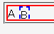
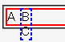

幅も高さも明示されていない相対配置要素に overflow: hidden; を指定しても、絶対配置された子孫要素に対してその指定が効かない。
<div style="position:relative; overflow:hidden; border:2px solid red;">A <div style="position:absolute; border:2px dashed blue; top:0em; left:1em;">B<br>C</div> </div>
親要素をはみ出す部分は表示しないようにしています。親div要素の高さが1行分に対し子div要素の高さは2行分なので、子div要素の下側は隠れてしまうはずです。
Moz1.0.1での表示（標準モード）
WinIE6.0での表示（標準モード）
親要素で幅か高さの少なくとも一方を明示すれば、このバグを回避できます。ただし、autoやinheritでは回避できません。
<div style="position:relative; width:99%; overflow:hidden; border:2px solid red;">A <div style="position:absolute; border:2px dashed blue; top:0em; left:1em;">B<br>C</div> </div>
WinIE6.0では標準・互換の両モードで不具合の発生が確認されました。